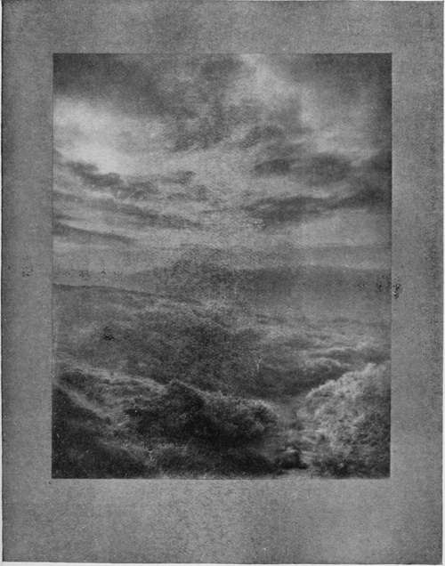
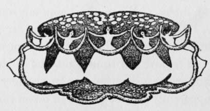

Washing
Description
This section is from the book "The Barnet Book Of Photography", by Herts Barnet. Also available from Amazon: The Barnet Book Of Photography.
Washing
Having fixed our prints, it now remains to remove the hypo and the silver salts it holds in solution. This is the most tedious of all the processes, because experience has shown that the old method of placing prints in running water for two or more hours is not at all satisfactory. On the other hand, if prints are treated as described for washing previous to toning, the hypo is satisfactorily and expeditiously removed. It must be remembered, however, that hypo clings to the paper much more tenaciously than salt. Therefore, the action must be continued for much longer time. Half an hour of such treatment, every print having separate attention with the water warmed to 650 Fahr., should be satisfactory from every point of view. To make the matter easier and not throw too much responsibility on the water baths, I find it a good plan to wash each print, front and back, under the tap, thus removing all surface hypo before putting into the first wash water.
HILL AND DALE. By A. HORSLEY HINTON.
If prints are treated throughout in the manner indicated, there should be no need for a hardening bath at all; but if prints are at all soft the use of formaline is to be recommended. I deprecate the use of alum with P.O.P. It is not so efficacious as formaline, not so easily washed out, and is more likely to cause trouble through its natural acidity. Formaline also has the advantage in that it can be added to the toning bath (if sulphocyanide), to the fixing bath, or to the washing waters without detriment to the chemical action in progress.
P.O.P. may be dried with the natural surface of the paper, or the surface may be modified. Matt papers, of course, are not intended to be altered, but glossy papers can be given an almost mirror-like surface by squeegeeing on to a polished surface such as good glass. The prints should preferably be allowed to dry first and then soaked for a short time in water. The glass is prepared by thorough cleaning with whiting, after which it is dusted over with French chalk. The chalk is well rubbed on and polished off at the same operation, care being taken not to rub too hard or the surface of the glass itself will suffer. The wet print is then laid film down on the prepared surface of the glass, a piece of rubber sheeting or celluloid or oil-baize laid on top, and the squeegee can then be applied with considerable pressure in order to expel all air-bubbles. When the temporary covering has been removed the glass and adhering print are placed in a good draught to dry. The drying must be most thorough. Any attempt to remove the print whilst the slightest dampness is present will cause disaster. In summer time they may, when apparently dry, be placed in direct sunlight for a few moments when they will generally leave the glass spontaneously. If not, one corner can be raised by the fingernail, and a steady pull will remove the whole print. In winter time slight warming near the fire may take the place of the heat of the sun. Glossy post-cards treated in this manner have a very finished look, also other glossy cards. The card P.O.P. although it does not need mounting, makes excellent prints which need no stiffening for mounting with glazed surface. They are best attached to the mounts by a narrow edging of hot thin glue. Glossy P.O.P. may have its surface modified in the reverse direction by squeegeeing to ground glass or matt opal. The beauty of the surface so obtained is variable according to the fineness of the grinding of the glass. Such glass, for instance, as is used for high-class focussing screens will yield a beautiful velvety matt which is quite different from the surface of matt paper, and which for some purposes may be preferred. French chalk is not suitable for use on matt surfaces and should be replaced by the waxing solution sold for use with Barnet carbon tissue in double transfer process.
Throughout this article it has not been thought necessary to repeat formula; that are found in every packet of P.O.P. Only those are given which imply a departure from the beaten track.
IV. E. A. Drinkivater.

Continue to:
- prev: Fixing Bath
- Table of Contents
- next: Bromide Printing
Tags
paper, print, negative, exposure, lens, development, camera, focus